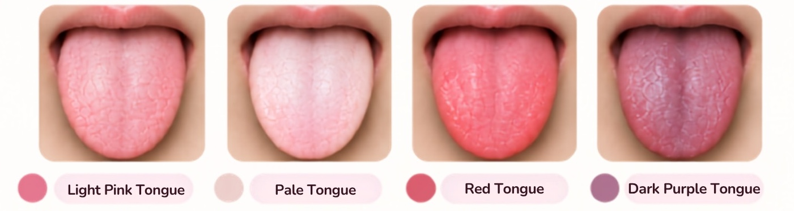
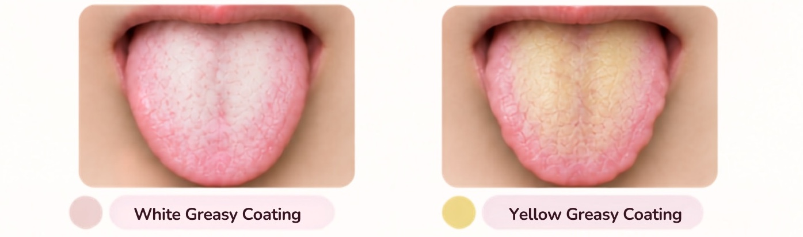
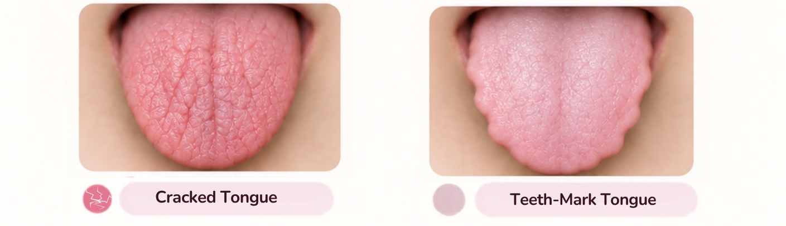

Glancing at your tongue while brushing your teeth is a habit many people already have — but what does it actually mean when your tongue looks paler than usual, your coating thickens, or you notice a row of tooth marks along the edge? Of the four diagnostic methods in Chinese medicine — observation, listening/smelling, inquiry and pulse-taking — tongue observation is the one you can easily do yourself at home. Here's a breakdown of what tongue colour, coating and shape can tell you.
What is tongue diagnosis? A key part of TCM visual examination
The tongue is connected to the internal organs via the body's meridian system. A healthy tongue is generally light pink with a thin, evenly distributed white coating. By observing tongue colour and coating, TCM practitioners can roughly estimate tendencies such as blood circulation and overall constitution — but tongue diagnosis is never used on its own. In clinical practice, it's always combined with a patient interview and pulse-taking.
Tongue appearance is also easily affected by external factors — just waking up, having eaten or drunk something colourful, or even the weather, can all cause temporary changes. That's exactly why the self-check section below covers a few details worth keeping in mind.
What does tongue colour mean? Four common colours explained
Tongue colour is usually the first thing you notice, and it broadly reflects the body's qi, blood and heat-cold tendencies.
| Tongue colour | May reflect | Commonly seen with |
|---|---|---|
| Light pink (with a natural sheen) | Balanced qi and blood | Generally considered a healthy tongue colour |
| Pale white | Insufficient qi and blood, or a cold-leaning constitution | Often seen in those who tire easily or have cold hands and feet |
| Red (bright red) | Excess internal heat | May come with a dry mouth or a tendency to feel easily heated |
| Dark purple (or with purplish spots) | Poor blood circulation, blood stasis | May come with stabbing pain or a fixed area of discomfort |

Light pink: usually a healthy tongue colour
A light pink tongue with a natural sheen is seen in TCM as a sign of balanced qi and blood and normally functioning organs — this is the most common, and most desirable, tongue colour in a healthy person.
Everyday suggestion: no particular adjustment is needed — just keep a regular routine and a balanced diet.
Pale white: a sign of insufficient qi and blood
A tongue that looks paler than usual, even whitish, is generally attributed in TCM to insufficient qi and blood, or a body affected by cold. This is more common in people who tire easily, look pale, or have cold hands and feet.
Everyday suggestion: cut back on raw and cold foods, add a bit more warm, easy-to-digest food, and pay attention to whether you're getting enough sleep.
Red: excess internal heat
A tongue that's redder than usual, even bright red, more often reflects excess internal heat and organs running in "overdrive." This group sometimes also notices a dry mouth, irritability, or a tendency to feel easily heated.
Everyday suggestion: keep meals light, cut back on spicy, fried and other stimulating foods, and pay attention to sleep quality and emotional balance.
Dark purple: a warning sign of blood stasis
A tongue that's deep red or even dark purple, especially with purplish spots, is generally seen in TCM as a sign of blood stasis. If this comes with persistent chest tightness or discomfort elsewhere in the body, see a doctor promptly — this shouldn't simply be treated as a constitutional issue.
Everyday suggestion: stay moderately active and avoid prolonged sitting, and keep the body warm; if there's noticeable discomfort, seeing a doctor promptly should always come first.
What does tongue coating show? White greasy vs yellow greasy coating
The colour and thickness of tongue coating is an important clue for assessing dampness and heat-cold in the body. Generally, the more yellow the coating, the more pronounced the heat sign; the thicker and greasier the coating, the more it's linked to dampness or digestive load.
| Coating | Common cause | Possible accompanying signs |
|---|---|---|
| White greasy coating | Often linked to excess dampness or phlegm-damp accumulation | Feeling heavy, tiring easily, poor appetite |
| Yellow greasy coating | Often linked to damp-heat | Light-headedness, chest tightness, bad breath, sticky stools |

White greasy coating: often linked to dampness
A coating that's thick, white and greasy — almost paste-like — is generally seen in TCM as a sign of excess dampness in the body, with the spleen and stomach's ability to metabolise fluids running weaker than usual. This group often also feels physically heavy, tires easily, and has a reduced appetite.
Everyday suggestion: keep meals light, cut back on sweets, greasy food and raw/cold food, and moderate exercise can help improve a phlegm-damp constitution.
Yellow greasy coating: often linked to damp-heat
Building on a white greasy coating, if the coating turns yellow, TCM generally interprets this as dampness and heat occurring together — "damp-heat." Besides the thick, greasy coating, this group often also experiences light-headedness, chest tightness, poor appetite and sticky stools.
Everyday suggestion: cut back on barbecued, fried and spicy food, eat more fresh vegetables and fruit, and stay well hydrated.
Beyond colour and thickness, a coating that's unusually thick, unusually thin, or entirely absent also carries meaning: an overly thick coating tends to indicate a more pronounced pathogenic factor or poor digestion, while a tongue with no coating at all is generally seen as a sign of more significant yin deficiency — especially if deep cracks are present as well, which is worth paying closer attention to.
What tongue shape reveals: cracked tongue and tooth-marked tongue
Beyond colour and coating, the shape and edges of the tongue are another key focus in TCM tongue observation.
| Tongue shape | Features | Commonly associated constitution |
|---|---|---|
| Cracked tongue | Cracks of varying depth across the tongue's surface | Often linked to yin deficiency or qi deficiency |
| Tooth-marked tongue | Serrated indentations along the tongue's edge | Often linked to spleen deficiency or qi deficiency |

Cracked tongue: often linked to yin or qi deficiency
A cracked tongue is often seen with a constitution of yin deficiency with excess heat. If the tongue is reddish-purple and dry with cracks, this generally points to heat injuring yin; if it's pale and cracked, this is more often linked to blood deficiency or insufficient body fluids. It's also worth checking whether the coating is moist or dry: a dry, cracked coating tends to indicate heat injuring the body's fluids, while a coating that's still moist despite the cracks is more often seen with a qi-deficient constitution.
Everyday suggestion: pay attention to whether you're getting enough sleep and fluids, and avoid prolonged late nights or mentally exhausting yourself.
Tooth-marked tongue: often linked to spleen or qi deficiency
A row of serrated indentations along the tongue's edge, caused by pressure from the teeth, is known as a tooth-marked tongue. TCM generally attributes this to spleen deficiency or qi deficiency, with a weaker-than-usual ability to metabolise fluids. If the tongue body is also enlarged alongside the tooth marks, this usually points to spleen deficiency with excess dampness — a constitution often accompanied by a puffier build, lower activity levels, and tiring easily.
Everyday suggestion: eat at regular times and in regular amounts, avoid raw, cold or hard-to-digest food, and pair this with moderate exercise to help improve a spleen-deficient constitution.
How to check your own tongue at home
If you'd like to observe your own tongue at home, a few details will make your reading more accurate:
- Check in the morning before brushing your teeth, under good natural light — avoid yellowish artificial lighting, which can distort colour.
- Avoid coffee, strong tea or dark-coloured foods for at least half an hour beforehand, as these can temporarily stain the coating.
- Look in this order: colour first, then coating, then the tongue's shape and edges.
- Let the tongue rest naturally — there's no need to stick it out forcefully, as this can temporarily alter its colour.
- A single day's reading isn't very meaningful on its own; tracking the trend over several days is far more useful, since tongue appearance is easily swayed by sleep and diet.
Your tongue is only one clue — when to pay attention
Tongue appearance is only one clue among many — it should always be weighed alongside sleep, appetite, digestion, bowel and bladder habits, and menstrual cycle, rather than used to self-diagnose or self-medicate. See a doctor promptly if you notice any of the following:
- A persistently dark purple tongue accompanied by chest tightness, chest pain, or ongoing discomfort elsewhere in the body.
- A coating that thickens or turns from white to yellow over a short period, accompanied by fever or a bitter taste in the mouth.
- A coating that's absent for a long time, cracking that keeps getting worse, or your overall condition steadily declining.
- An unexplained ulcer on the tongue that hasn't healed after two weeks.
- You want to adjust your diet or try herbal remedies based on your constitution, but you're still unsure after assessing it yourself.
Chinese medicine diagnosis relies on combining all four diagnostic methods — observation, listening/smelling, inquiry and pulse-taking. Tongue appearance is just one part of that picture; for an actual assessment of your constitution, it's best to see a registered Chinese medicine practitioner in person.
Frequently Asked Questions
Should I brush off my tongue coating before showing it to my doctor?
No, this isn't recommended. Scraping the coating off while brushing your teeth, or deliberately cleaning your tongue before an appointment, makes it harder for the practitioner to judge your true tongue condition — it's best to keep things natural before a consultation.
My tongue coating looks especially thick right after I wake up — does that mean something's wrong?
Not necessarily. Right after waking, saliva production is lower and there's been less oral activity overnight, so the coating can look thicker than it really is. Try rinsing your mouth first, then check again to see if it's still noticeably thick. It's only worth paying closer attention if it stays thick over time and comes with other discomfort.
Can food or drink affect tongue colour?
Yes. Coffee, strong tea, dark-coloured sweets and similar items can all temporarily stain the tongue coating. It's best to avoid coloured food or drink for a while before checking your tongue or seeing a practitioner, to reduce the margin of error.
Is tongue diagnosis accurate? Can my constitution be determined just by looking at my tongue?
Tongue diagnosis is one part of TCM's visual examination, and it does reflect a general tendency in the body — but Chinese medicine diagnosis is built on combining all four diagnostic methods together, not tongue appearance alone. It's best to have a registered Chinese medicine practitioner assess you through a full consultation, including pulse-taking.
Does a tooth-marked tongue always mean spleen deficiency?
In most cases, yes, a tooth-marked tongue is linked to spleen deficiency or qi deficiency — but it still needs to be considered together with coating thickness and other symptoms, such as whether the tongue is also enlarged, whether you tire easily, or whether your stools tend to be loose. Tooth marks alone aren't enough to confirm a constitution.
Conclusion
The tongue is the easiest part of TCM visual diagnosis to check yourself — its colour, coating and shape can all reflect general tendencies in the body's qi, blood, heat and cold. Rather than fixating on a single day's reading, it's more useful to build a habit of regular observation and watch whether the overall trend stays stable.
If you'd like a more structured understanding of your own constitution, you can start with the TCM constitution questionnaire (currently Chinese-language only), then book a consultation as needed for a full assessment and a personalised approach to care.
References4 items
- Jiang B, Liang X, Chen Y, et al. Integrating next-generation sequencing and traditional tongue diagnosis to determine tongue coating microbiome. Scientific Reports. 2012;2:936. (Research study; white-greasy vs yellow-dense tongue coating corresponds to distinct microbiome profiles associated with TCM Cold and Hot Syndromes.) https://doi.org/10.1038/srep00936
- Wang ZC, Zhang SP, Yuen PC, et al. Intra-Rater and Inter-Rater Reliability of Tongue Coating Diagnosis in Traditional Chinese Medicine Using Smartphones: Quasi-Delphi Study. JMIR mHealth and uHealth. 2020;8(7):e16018. (Research study; shows tongue coating assessment can be affected by factors such as angle and lighting, underscoring the need for standardised evaluation.) https://doi.org/10.2196/16018
- Department of Chinese Medicine, Ministry of Health and Welfare, Taiwan: "Tongue Observation" (望舌). https://dep.mohw.gov.tw/DOCMAP/cp-772-5723-108.html
- Ma, Chien-Chung (馬建中). Chinese Medicine Diagnostics (New Edition) (中醫診斷學（新編版）). Taipei: Cheng Chung Book Co., 2017. Part 2, Tongue Section: syndrome differentiation of tongue body and coating. ISBN 978-957-09-1955-4
Want to understand your own constitution better?
Feel free to book a consultation with a registered Chinese medicine practitioner for a full assessment and a personalised care plan.
Book a Consultation →
About the author
Dr. Kate Woo (Wu Pui Shan) is a Registered Chinese Medicine Practitioner in Hong Kong (Chinese Medicine Council of Hong Kong registration no. 008823), practising in Central. She combines the four diagnostic methods of Chinese medicine with modern medical knowledge to create personalised constitutional care plans for her patients.
This article is provided for health education purposes only. It does not constitute medical advice and cannot replace diagnosis or treatment by a registered doctor or Chinese medicine practitioner. If you experience acute or severe symptoms, please seek medical attention immediately. Written by Dr. Kate Woo, Registered Chinese Medicine Practitioner (Chinese Medicine Council of Hong Kong registration no. 008823).